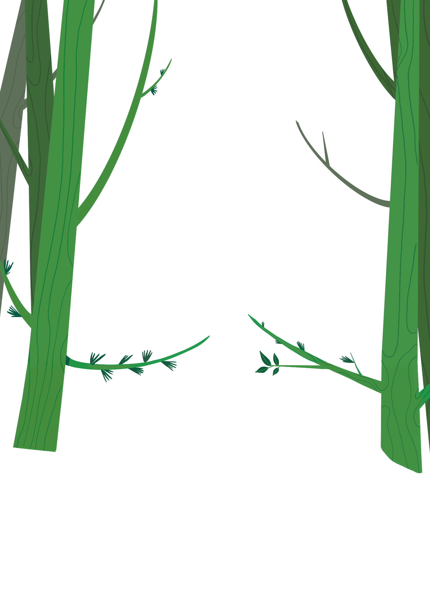
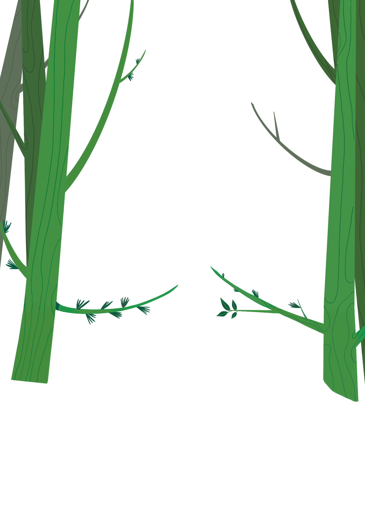
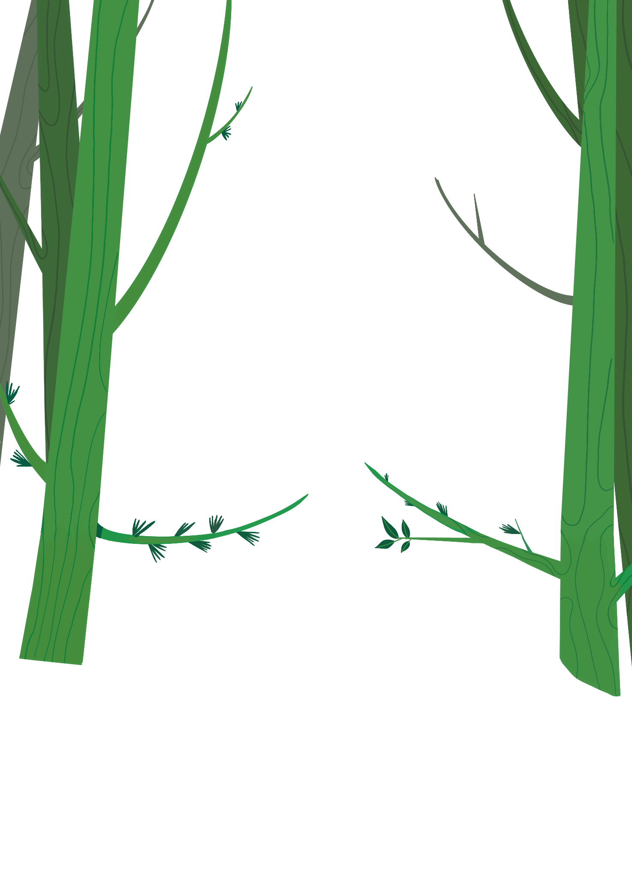
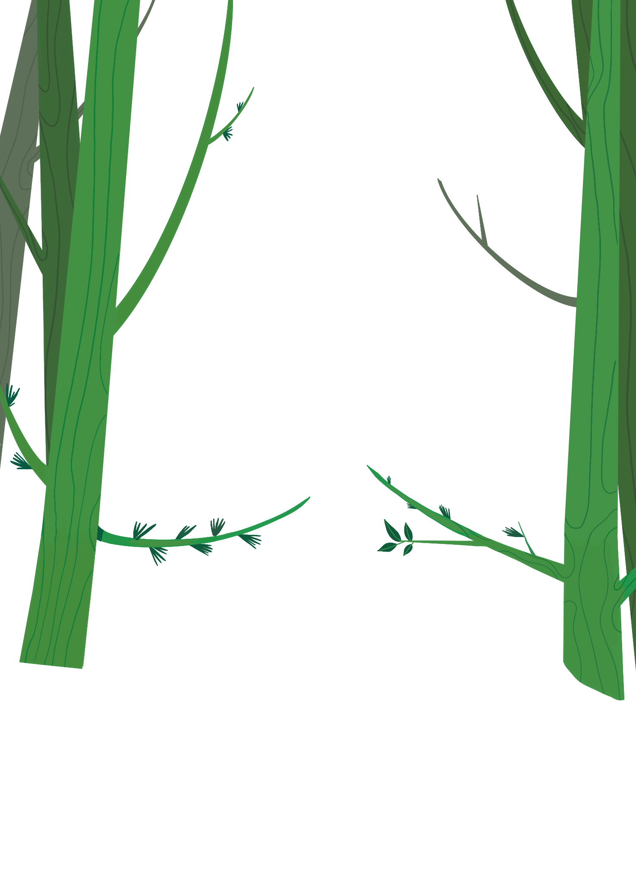

History

(200 B.C. - 2010)
Kombucha originated
in Northeast China
Kombucha originated in Northeast China
(historically referred to as Manchuria) around 220 B.C.
and was initially prized for its healing properties.
Its name is reportedly derived from Dr. Kombu, a Korean
physician who brought the fermented tea to Japan as a curative
for Emperor Inkyo. Eventually the tea was brought to Europe as
a result of trade route expansions in the early 20th century,
most notably appearing in Russia (as "Kambucha") and
Germany (as "Kombuchaschwamm").
Kombucha most meaningfully
gained popularity in domestic
markets in the 1990s.
Sandor Katz, a leading fermentation expert and author of The Art
of Fermentation, noted that this initial popularity was due in part to
consumers who believed that the beverage was a powerful
health aid for serious medical conditions. Katz explained,
"I first tried kombucha around 1994, when a friend of mine with
AIDS started making and drinking it as a health practice.
It was touted as a general immune stimulant, though claims of
kombucha's benefits have been extraordinarily varied and broad."
Initially kombucha in the
United States was distributed
solely by grassroots
Initially kombucha in the United States was distributed solely by
grassroots efforts wherein enthusiasts would share their SCOBYs
(a symbiotic culture of bacteria and yeast disc) with others
so that they could homebrew the tea themselves.
Many attribute the formal start of the domestic kombucha
industry to GT Dave who founded GT's Kombucha, which has
continued to be the leading domestic kombucha brand.
GT's Kombucha began in 1995 as a mission-driven family
business that initially sold to local health stores before gaining
widespread popularity.
2010 REGULATION CRISIS
Through the early 2000s, kombucha continued to see healthy growth due in part to increased consumer awareness via expanded grassroots distribution and the increased availability of GT's Kombucha.
However, the production and distribution of kombucha halted abruptly for two months in 2010 following a Whole Foods inspection by Maine
Department of Agriculture Consumer Protection Inspector Randy Trahan.
During a routine bottle audit at the Whole Foods in Portland,
Trahan noticed leaking kombucha bottles. Trahan explained,
“Some of the Kombucha bottles on the shelf were leaking.
Being a public health official, I know that alcohol is a by-product of the
fermentation process.
I could immediately see that there might be a public safety issue...
Kids could get hold of this and get a buzz."

Taste
Fermenting only with premium Osulloc
,
the organically-farmed green
tea & black tea
,
and combining the passionate pursuit
of that harmoniously fresh taste
with the meticulous
perfect blending of healthier/excellent quality ingredients
,
all perfected thru patented modern technology while retaining
that flavor of nature: L.LBean Kombucha
,
concentrating all the goodness in a bottle.